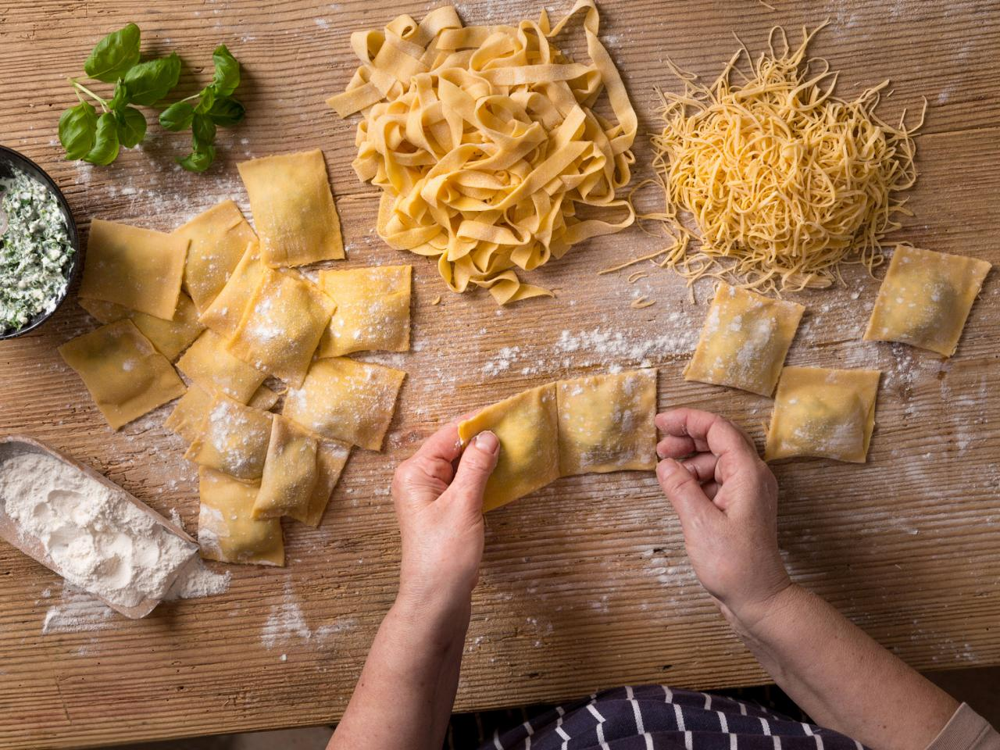

Welcome to Sustainable Eats
Discover delicious, sustainable recipes that help minimize food waste. Explore plant-based meals, zero-waste cooking tips, and sustainable sourcing suggestions for ingredients.
About Us
At Sustainable Eats, we believe in making mindful choices when it comes to food. Our goal is to inspire you with eco-conscious recipes and tips that are easy to follow.
Featured Recipes

- Plant-Based Lasagna
- Zero-Waste Veggie Broth
- Travel-Inspired Tiramisu
Cooking Tips
- Plan Your Meals: Planning your meals helps reduce food waste.
- Store Food Properly: Use airtight containers to keep food fresh.
- Repurpose Leftovers: Get creative with leftovers to avoid waste.
Contact Us
Email: info@sustainableeats.comInstagram: @sustainableeats
Sustainable Sourcing
We encourage sourcing ingredients from local farmers and markets. By choosing sustainable sources, we support our communities and reduce our carbon footprint.
"The greatest threat to our planet is the belief that someone else will save it." - Robert Swan